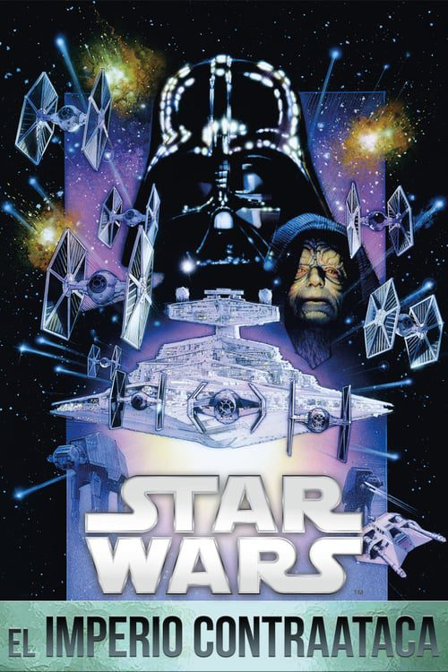
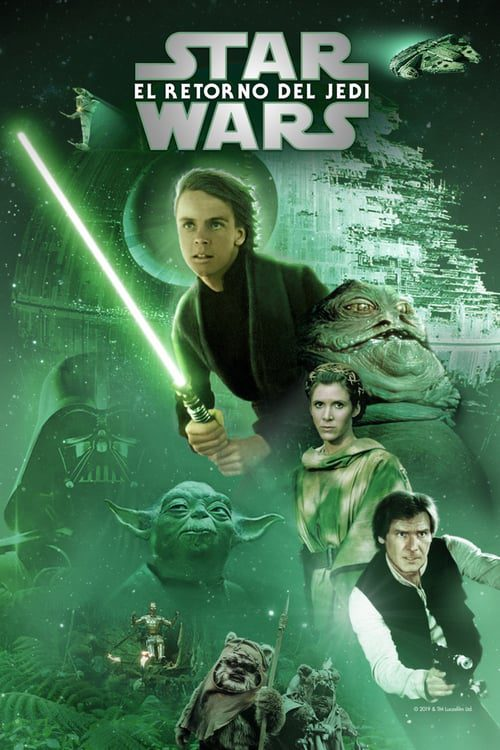
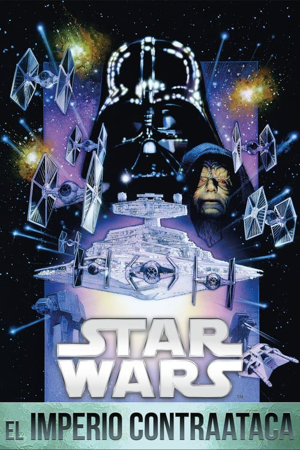
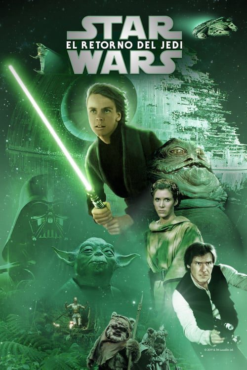

El cazarrecompensas Mando y el adorable Baby Yoda conocido como “el Niño” continúan su aventura por la galaxia tras el enfrentamiento con Moff Gideon. Con la caída del Imperio Galáctico y sus consecuencias, el camino no se presenta fácil para este carismático dúo que, mientras se abre camino, tiene que enfrentarse a enemigos al tiempo que suma nuevos aliados a su causa.
El legendario cazarrecompensas Boba Fett y la mercenaria Fennec Shand navegan por el lado criminal de la galaxia de regreso a las arenas de Tatooine para reclamar su derecho al territorio que solía gobernar Jabba el Hutt y su sindicato del crimen.

Se centra en Obi-Wan Kenobi 10 años después del final de las Guerras Clon, donde enfrentó su mayor derrota; la caída y corrupción de su mejor amigo y aprendiz de Jedi, Anakin Skywalker se convirtió en el malvado Lord Sith Darth Vader.
Diez años después de la invasión de Naboo, la galaxia está al borde de la guerra civil. Bajo el liderazgo de un Jedi renegado llamado Conde Dooku, miles de sistemas solares amenazan con separarse de la República Galáctica. Cuando se realiza un intento de asesinato contra la Senadora Padmé Amidala, la ex Reina de Naboo, el aprendiz Jedi de veinte años Anakin Skywalker es asignado para protegerla. En el transcurso de su misión, Anakin descubre su amor por Padmé y por su lado más oscuro. Pronto, Anakin, Padmé y Obi-Wan Kenobi se sienten atraídos por el corazón del movimiento separatista y el comienzo de las Guerras Clon.
Años después del inicio de las Guerras Clon, los nobles Caballeros Jedi lideran un masivo ejército clon en una batalla de galaxia contra los Separatistas. Cuando los siniestros Sith revelan un complot de mil años para gobernar la galaxia, la República se derrumba y de sus cenizas surge el malvado Imperio Galáctico. El héroe Jedi Anakin Skywalker es seducido por el lado oscuro de la Fuerza para convertirse en el nuevo aprendiz del Emperador: Darth Vader. Los Jedi están diezmados, mientras Obi-Wan Kenobi y el Maestro Jedi Yoda son forzados a esconderse. La única esperanza para la galaxia es la descendencia de Anakin: los hijos gemelos nacidos en secreto que crecerán y se convertirán en héroes.
Treinta años después de la victoria de la Alianza Rebelde sobre la segunda Estrella de la Muerte (hechos narrados en el Episodio VI: El retorno del Jedi), la galaxia está todavía en guerra. Una nueva República se ha constituido, pero una siniestra organización, la Primera Orden, ha resurgido de las cenizas del Imperio Galáctico. A los héroes de antaño, que luchan ahora en la Resistencia, se suman nuevos héroes: Poe Dameron, un piloto de caza, Finn, un desertor de la Primera Orden, Rey, una joven chatarrera, y BB-8, un androide rodante. Todos ellos luchan contra las fuerzas del Mal: el Capitán Phasma, de la Primera Orden, y Kylo Ren, un temible y misterioso personaje que empuña un sable de luz roja.
La Primera Orden se ha vuelto más poderosa y tiene contra las cuerdas a la Resistencia, liderada por la General Leia Organa. El piloto Poe Dameron encabeza una misión para intentar destruir un acorazado de la Primera Orden. Mientras tanto, la joven Rey tendrá que definir su futuro y su vocación, y el viejo jedi Luke Skywalker revaluar el significado de su vida.
Un año después de los eventos de «Los últimos Jedi», los restos de la Resistencia se enfrentarán una vez más a la Primera Orden, involucrando conflictos del pasado y del presente. Mientras tanto, el antiguo conflicto entre los Jedi y los Sith llegará a su clímax, lo que llevará a la saga de los Skywalker a un final definitivo. Final de la trilogía iniciada con «El despertar de la Fuerza».